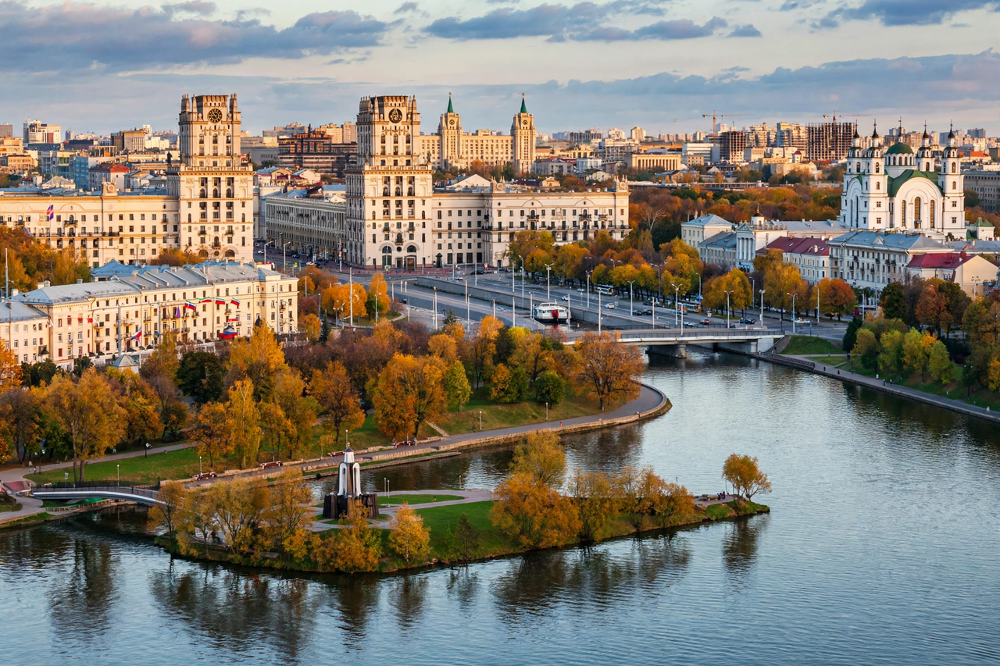

| Minsk | |
 Central Minsk and the Svislach River | |
| Country | Belarus |
|---|---|
| First mentioned | 1067 |
| Population | approx. 2 million (city) |
| Area | 409 km² |
| Role | Capital and largest city of Belarus; CIS headquarters |
Minsk is the capital and largest city of Belarus, with a population of about two million — roughly a fifth of the country's people. It lies on the Svislach and Nyamiha rivers in the centre of the country and serves as Belarus's political, economic, cultural, and scientific hub. Minsk is also the administrative centre of the Commonwealth of Independent States (CIS).
Minsk was first mentioned in chronicles in 1067 in connection with the Battle on the Nemiga River. It passed through the Principality of Polotsk, the Grand Duchy of Lithuania, and the Polish–Lithuanian Commonwealth, receiving Magdeburg rights in 1499. Annexed by the Russian Empire in 1793, it became a railway and industrial centre in the 19th century. During the Second World War Minsk was occupied by Nazi Germany from 1941 to 1944; the city was almost completely destroyed and much of its large Jewish population was murdered in the Minsk Ghetto and at Maly Trostenets. Rebuilt after the war in grand Stalinist style, Minsk became the capital of the Byelorussian SSR and, from 1991, of independent Belarus.
The city's main artery, Independence Avenue, is a showcase of Stalinist Empire architecture stretching over 15 km. Landmarks include the monumental Victory Square, the National Library (a rhombicuboctahedron opened in 2006), the red-brick Church of Saints Simon and Helena, and the Island of Tears memorial. The small surviving old town (Upper City) and the Trinity Suburb preserve fragments of pre-war Minsk. The Minsk Metro opened in 1984 and now has three lines.
Minsk hosts the headquarters of major Belarusian manufacturers such as MAZ (trucks), MTZ (Belarus tractors), and the Hi-Tech Park software cluster, as well as most of the country's universities and the National Academy of Sciences.